A gentle and practical overview of the EU AI Act
The EU AI Act is a comprehensive regulatory framework for AI systems that
aims to ensure the safety and fundamental rights of EU citizens. It covers a wide range of AI applications, from chatbots to autonomous vehicles, and introduces new requirements
for developers, users, and regulators. In this article, I'll provide a gentle introduction to the EU AI Act, explaining its key provisions and
implications for businesses and individuals. We'll also offer practical tips for complying with the new rules and navigating the EU's regulatory landscape. Whether you're a developer,
a business owner, or just curious about the future of AI in Europe, this article will help you understand the EU AI Act and its impact.
Disclaimer: This article is intended for informational purposes only and should not be construed as legal advice. Last updated: 08/06/2024.
Disclaimer: This article is intended for informational purposes only and should not be construed as legal advice. Last updated: 08/06/2024.
Table of contents
✔️ What is the current status of the EU AI Act?
✔️ What types of stakeholders are affected by the EU AI Act?
✔️ What is "AI" under the EU AI Act?
✔️ How are AI systems classified under the EU AI Act?
✔️ Requirements for high-risk AI systems
✔️ Requirements for General-Purpose AI systems
✔️ What fines can be imposed for non-compliance with the EU AI Act?
✔️ Who will enforce the EU AI Act?
✔️ What practical steps can providers take to comply with the Act?
✔️ What types of stakeholders are affected by the EU AI Act?
✔️ What is "AI" under the EU AI Act?
✔️ How are AI systems classified under the EU AI Act?
✔️ Requirements for high-risk AI systems
✔️ Requirements for General-Purpose AI systems
✔️ What fines can be imposed for non-compliance with the EU AI Act?
✔️ Who will enforce the EU AI Act?
✔️ What practical steps can providers take to comply with the Act?
What is the current status of the EU AI Act?
First, it is essential to note that the EU AI Act is complex legislation, 12 chapters long, containing 113 articles (plus 13 annexes and 180 recitals). If you wish to read the full text of the EU AI Act, you can
find it in a very accessible format at ai-act-law.eu.
I will constantly refer to this website throughout this article, so I recommend you to have it open in a separate tab.
Throughout 2023, the EU AI Act was discussed and negotiated by the European Parliament and the Council of the European Union. It passed the European Parliament on 13 March 2024 and was unanimously approved by the EU Council on 21 May 2024. Hence, it is a pretty recent piece of legislation, and it will take some time to be fully implemented across the EU Member States. The act is the first of its kind and sets a global standard for AI regulation. With this, EU legislators aim to ensure the safety and fundamental rights of EU citizens and promote the development of future legislation worldwide.
The Act is expected to enter into force in stages, with some provisions coming into effect after the EU parliament elections in June 2024. The full implementation of the Act is expected to take 2 to 3 years (~ 36 months) after the Act enters into force. Let us look at some of the main provisions to be implemented along the way.
These are just some of the main provisions expected to be implemented in the first 3 years after the Act enters into force.
Throughout 2023, the EU AI Act was discussed and negotiated by the European Parliament and the Council of the European Union. It passed the European Parliament on 13 March 2024 and was unanimously approved by the EU Council on 21 May 2024. Hence, it is a pretty recent piece of legislation, and it will take some time to be fully implemented across the EU Member States. The act is the first of its kind and sets a global standard for AI regulation. With this, EU legislators aim to ensure the safety and fundamental rights of EU citizens and promote the development of future legislation worldwide.
The Act is expected to enter into force in stages, with some provisions coming into effect after the EU parliament elections in June 2024. The full implementation of the Act is expected to take 2 to 3 years (~ 36 months) after the Act enters into force. Let us look at some of the main provisions to be implemented along the way.
- First 6 months: General provisions, such as the definitions of AI systems and the scope of the Act, are expected to be implemented by the end of 2024. Also, it is expected to establish the practices deemed unacceptable, thus forbidden, under the Act.
- First 12 months: Entering in 2025, it is expected that all notifyin authorities, together with notifying bodies, will be established. It is also expected that the EU AI Board will be established, together with the especification of the National regulators. Also, general provisions regarding general purpose AI systems are expected to be implemented. Penalties regarding these provisions are also expected to be established up to 12 months after the Act enters into force.
- First 24 months: The Act is expected to be implemented in its general or full application by 2026, including the provisions regarding high-risk AI systems.
- First 36 months: Some provisions regarding high-risk AI systems are delayed to be implemented up to 36 months after the Act enters into force. This includes the provisions regarding systems used as safety components in products covered by the EU harmonization law (e.g., machinery, toys, etc.).
These are just some of the main provisions expected to be implemented in the first 3 years after the Act enters into force.
What types of stakeholders are affected by the EU AI Act?
The EU AI Act affects many stakeholders, including developers, users, and regulators. Here's a brief overview of the groups that are most affected by the new legislation:
Even though the Act is quite comprehensive, it is essential to note several exclusions to the Act. For example, the Act does not apply to AI systems used for military purposes, law enforcement, or national security. It also does not apply to AI systems used for personal, non-professional, or non-commercial purposes. The Act excludes AI systems used for research and development purposes as long as they are not placed on the EU market. Also, the Act does not apply to AI systems released as open-source software, except AI systems used for prohibited practices, high-risk AI systems, and general-purpose AI (GPAI) systems under certain conditions.
- Providers: Providers are those who develop, manufacture, or distribute AI systems in the EU under their own name or trademark. If they place AI systems on the EU market, the AI Act applies to them. If the provider is not established in the EU, but the AI system is placed on the EU market, the provider is still subject to the Act.
- Deployers: Deployers use AI systems in the EU. These are typically the providers' end-users. Just like providers, deployers must comply with the Act if they use AI systems in the EU or if the outputs of the AI systems are used in the EU.
- Authorized representatives: Authorized representatives act on behalf of providers not established in the EU.
- Importers: Importers place AI systems from third countries on the EU market. In short, all who place AI systems on the EU market are subject to the Act.
- Distributors: Distributors supply AI systems on the EU market. Again, all who place AI systems on the EU market are subject to the Act.
- Operators: Operators designate providers, manufacturers, distributors, or representatives to act on their behalf. Anyone who performs this role to promote its own trademark or name is subject to the Act.
- Affected Persons: Affected persons are those who are somehow affected by an AI system's outputs.
Even though the Act is quite comprehensive, it is essential to note several exclusions to the Act. For example, the Act does not apply to AI systems used for military purposes, law enforcement, or national security. It also does not apply to AI systems used for personal, non-professional, or non-commercial purposes. The Act excludes AI systems used for research and development purposes as long as they are not placed on the EU market. Also, the Act does not apply to AI systems released as open-source software, except AI systems used for prohibited practices, high-risk AI systems, and general-purpose AI (GPAI) systems under certain conditions.
What is "AI" under the EU AI Act?
The EU AI Act defines AI in a very broad sense. According to the Act (Article 3, paragraph 1), AI is defined as follows:
"AI system means a machine-based system that is designed to operate with varying levels of autonomy and that may exhibit adaptiveness after deployment, and that, for explicit or implicit objectives, infers, from the input it receives, how to generate outputs such as predictions, content, recommendations, or decisions that can influence physical or virtual environments."
It is important to note that a special provision in the AI Act excludes some systems from the definition of AI. For example, the Act excludes general software applications, such as word processors, spreadsheets, and web browsers, from the definition of AI. For the AI Act to apply, the system must be designed to infer outputs from inputs and influence physical or virtual environments. Many software applications and systems are not considered AI under the Act. More information on this can be found in Recital 12 of the Act.
"AI system means a machine-based system that is designed to operate with varying levels of autonomy and that may exhibit adaptiveness after deployment, and that, for explicit or implicit objectives, infers, from the input it receives, how to generate outputs such as predictions, content, recommendations, or decisions that can influence physical or virtual environments."
It is important to note that a special provision in the AI Act excludes some systems from the definition of AI. For example, the Act excludes general software applications, such as word processors, spreadsheets, and web browsers, from the definition of AI. For the AI Act to apply, the system must be designed to infer outputs from inputs and influence physical or virtual environments. Many software applications and systems are not considered AI under the Act. More information on this can be found in Recital 12 of the Act.
How are AI systems classified under the EU AI Act?
The EU AI Act classifies AI systems in a risk-based, cross-sectoral approach. This means the Act applies different requirements to AI systems based on their risk level and the sector in which they are used.
The Act establishes specific requirements for each risk category that providers, deployers, and other stakeholders must comply with. Here are the main categories of AI systems under the Act:
Most of the provisions of the Act focus on high-risk AI systems, as these systems pose the most significant risks to EU citizens. From Article 6 to Article 49 (the entire Chapter 3), the Act establishes specific requirements for developing, deploying, and using high-risk AI systems. An interesting point to note is that the current version of the Act does allow for AI systems to be downgraded from high-risk to limited-risk (even those in Annex 3), as long as the provider can demonstrate that the AI system does not pose significant risks to EU citizens' safety and fundamental rights. The specifics of this fundamental rights impact assessment can be found in Article 27 of the Act. However, the Act specifies that any system that performs human profiling, like biometric identification or real-time surveillance, cannot be downgraded from high-risk to limited-risk.
Complicated? Here is a flowchart to help you understand the classification of high-risk AI systems under the EU AI Act:

Side note: If you wish to learn more about how fundamental rights impact assessment work and look like, I recommend you to check the Human rights impact assessment guidance and toolbox by the Danish Institute for Human Rights.
- Prohibited practices: These are considered unacceptable under the Act. They include practices that violate fundamental rights, such as discrimination, manipulation, and exploitation. The Act prohibits the use of AI systems for these purposes. More information on prohibited practices can be found in Article 5 of the Act. A list of criminal offences referred to in Article 5 can be found in Annex 2 of the Act.
- High-risk AI systems: These are AI systems that pose significant risks to EU citizens' safety and fundamental rights. These systems are usually tied to critical sectors, such as healthcare, transportation, and energy. The Act establishes specific requirements for developing, deploying, and using high-risk AI systems to ensure their safety and compliance with EU law. More information on high-risk AI systems can be found in Chapter 3 of the Act. A list of high-risk AI systems can be found in Annex 3 of the Act.
- General-purpose AI systems: These are AI systems that have specific requirements due to their peculiarities. Systems like foundational AI systems, GenAI, and other types of general-purpose AI systems are only considered high-risk AI systems if they present what is called systemic risks (more on that in section Requirements for General-Purpose AI systems). More information on general-purpose AI systems can be found in Chapter 5 of the Act. A canonical example of a general-purpose AI system is any foundational AI system, like large language models (e.g., GPT-4, Llama 3, etc.).
- Limited-risk AI systems: These are AI systems that pose lower risks to EU citizens' safety and fundamental rights. The Act establishes lighter requirements for the development, deployment, and use of limited-risk AI systems, mainly focusing on transparency and accountability. More information on limited-risk AI systems can be found in Article 50 of the Act.
- Minimal-risk AI systems: These are AI systems that pose minimal risks (e.g., spam filters, video games, etc.). The Act exempts minimal-risk AI systems from most of its requirements.
Most of the provisions of the Act focus on high-risk AI systems, as these systems pose the most significant risks to EU citizens. From Article 6 to Article 49 (the entire Chapter 3), the Act establishes specific requirements for developing, deploying, and using high-risk AI systems. An interesting point to note is that the current version of the Act does allow for AI systems to be downgraded from high-risk to limited-risk (even those in Annex 3), as long as the provider can demonstrate that the AI system does not pose significant risks to EU citizens' safety and fundamental rights. The specifics of this fundamental rights impact assessment can be found in Article 27 of the Act. However, the Act specifies that any system that performs human profiling, like biometric identification or real-time surveillance, cannot be downgraded from high-risk to limited-risk.
Complicated? Here is a flowchart to help you understand the classification of high-risk AI systems under the EU AI Act:

Side note: If you wish to learn more about how fundamental rights impact assessment work and look like, I recommend you to check the Human rights impact assessment guidance and toolbox by the Danish Institute for Human Rights.
Requirements for high-risk AI systems
Suppose you wish to have a more detailed overview of the requirements for high-risk AI systems. In that case, I recommend you to check the Chapter 3 of the Act. From
Article 8 to Article 27, the Act establishes specific requirements for developing, deploying, and using high-risk AI systems. Here is a brief overview of the main requirements for high-risk AI systems:
Side note: Much of the documentation-related requirements can be summarized as the practice of creating model cards. If you wish to learn more about model cards, I recommend you to check the Model Cards for Model Reporting (original article here). Also, if you wish to learn more about transparency practices and techniques, I recommend you to check the Ethical Problem Solving section on transparency (original article here).
- Assessment and Registration: Providers must conduct an impact assessment to identify and mitigate the risks posed by the AI system. Providers must also register high-risk AI systems with the relevant authorities. In some cases, providers must also deliver documentation regarding the assessment of the AI system to the authorities, especially if the wish to downgrade the AI system from high-risk to limited-risk (Article 6).
- Risk Management: Providers must implement risk management systems to monitor and control the risks posed by the AI system. A risk management system is understood to be a continuous iterative process planned and run throughout the entire lifecycle of a high-risk AI system, requiring regular, systematic review and updating (Article 9).
- Data Governance: Providers must establish data governance systems that the data used to train, validate, and test the AI system abide by the EU data protection laws and the data requirements specified in the Act. The requirements involve outlining design choices, detailing data collection and origin (including the original purpose for personal data), describing data-preparation operations, formulating assumptions about data representation, assessing data set availability and suitability, examining biases affecting health, safety, rights, or leading to prohibited discrimination, implementing measures to address these biases, and identifying and addressing data gaps or shortcomings to ensure compliance with regulations. (Article 10).
- Technical Documentation: Providers must maintain technical documentation for the AI system, including information about the system's design, development, deployment, and use. This documentation must be done in a manner that demonstrates that the high-risk AI system complies with the requirements set out by the Act and to provide national competent authorities and notified bodies with the necessary information in a clear and comprehensive form to assess the compliance of the AI system with those requirements (Article 11). Sepecifications regarding the technical documentation can be found in Annex 4 of the Act.
- Transparency: Providers must ensure that high-risk AI systems are designed and developed so that their operation is sufficiently transparent. This includes providing information about the AI system's capabilities, how to use it, and other relevant information to users and other stakeholders. The Act also requires that the AI system's operation be transparent to the extent that the AI system's outputs can be understood, interpreted, and predicted by the user (Article 13).
Side note: Much of the documentation-related requirements can be summarized as the practice of creating model cards. If you wish to learn more about model cards, I recommend you to check the Model Cards for Model Reporting (original article here). Also, if you wish to learn more about transparency practices and techniques, I recommend you to check the Ethical Problem Solving section on transparency (original article here).
Requirements for General-Purpose AI systems
According to the EU AI Act, General-Purpose AI systems are system that (all definitions are in Article 3 of the Act):
"... display significant generality and is capable to competently perform a wide range of distinct tasks regardless of the way the model is released on the market and that can be integrated into a variety of downstream systems or applications".
For these systems, the Act establishes specific requirements due to their peculiarities. Systems like foundational AI systems, GenAI, and other types of general-purpose AI systems are only considered high-risk AI systems if they present what is called systemic risks. But what are systemic risks?
"... a risk that is specific to the high-impact capabilities of general-purpose AI models, having a significant impact on the Union market due to their reach, or due to actual or reasonably foreseeable negative effects on public health, safety, public security, fundamental rights, or the society as a whole, that can be propagated at scale across the value chain".
For a general-purpose AI system to be considered high-risk, it must present systemic risks. And for this, certain conditions must be met. These conditions are:
Providers of general-purpose AI models with systemic risk must evaluate their models using state-of-the-art protocols, including adversarial testing, to identify and mitigate systemic risks. They must also promptly assess and address potential risks at the Union level and report serious incidents to the AI Office and national authorities. Adequate cybersecurity measures must also be implemented for the AI model and its infrastructure. Suppose providers do not adhere to an approved code or standard. In that case, they must demonstrate alternative compliance methods for the Commission's assessment. More information on this can be found in Article 55.
Generative AI models, like GPT-4 and DALL-E, are good examples of general-purpose AI systems that (probably) present systemic risks. As an example of obligations for providers of GenAI systems, we can mention that providers must ensure that the AI system's outputs can be identified and distinguished from human-generated content and that the AI system's outputs are not used to manipulate, deceive, or mislead users (Recital 134). The provider must also provide measures to ensure that users are informed when they interact with the AI system and that the AI system's outputs are not from a natural person. The provider must also provide measures to ensure that the AI system's outputs are not used to impersonate a natural person or to generate deepfakes.
The Act establishes lighter requirements for general-purpose AI systems that do not present systemic risks. These requirements focus on transparency, compliance with other EU legislations, and accountability, like the existence of technical documentation that is available to the public (not required for open-source models), policies to respect EU copyright laws, and the nomination of EU representatives for providers not established in the EU. More information on the obligations of general-purpose AI systems that do not present systemic risk can be found in Articles 53 and 54.
Side note: If you wish to learn more about practices and techniques related to truthfulness (i.e., ensuring that AI systems do not generate fake content or are used for deceptive purposes), I recommend you explore the Ethical Problem Solving section on truthfulness. There you will find a comprehensive guide on how to ensure that AI systems are used for truthful purposes. Meanwhile, you van visit the reliability section to learn more about things like adversarial testing and other techniques to ensure that AI systems are reliable and robust
"... display significant generality and is capable to competently perform a wide range of distinct tasks regardless of the way the model is released on the market and that can be integrated into a variety of downstream systems or applications".
For these systems, the Act establishes specific requirements due to their peculiarities. Systems like foundational AI systems, GenAI, and other types of general-purpose AI systems are only considered high-risk AI systems if they present what is called systemic risks. But what are systemic risks?
"... a risk that is specific to the high-impact capabilities of general-purpose AI models, having a significant impact on the Union market due to their reach, or due to actual or reasonably foreseeable negative effects on public health, safety, public security, fundamental rights, or the society as a whole, that can be propagated at scale across the value chain".
For a general-purpose AI system to be considered high-risk, it must present systemic risks. And for this, certain conditions must be met. These conditions are:
- High-impact capabilities: The system must have high-impact capabilities, meaning it can significantly influence the Union market due to its reach.
- Commission decision: The system must be subject to a Commission decision, ex officio or following a qualified alert from the scientific panel, that establishes that the system presents systemic risks.
- Compute: The AI model is presumed to have high impact capabilities if the cumulative amount of computation used for its training, measured in floating point operations, is greater than 10^25 (GPT-4 is estimated to have required 2 x 10^25 FLOPS for training).
Providers of general-purpose AI models with systemic risk must evaluate their models using state-of-the-art protocols, including adversarial testing, to identify and mitigate systemic risks. They must also promptly assess and address potential risks at the Union level and report serious incidents to the AI Office and national authorities. Adequate cybersecurity measures must also be implemented for the AI model and its infrastructure. Suppose providers do not adhere to an approved code or standard. In that case, they must demonstrate alternative compliance methods for the Commission's assessment. More information on this can be found in Article 55.
Generative AI models, like GPT-4 and DALL-E, are good examples of general-purpose AI systems that (probably) present systemic risks. As an example of obligations for providers of GenAI systems, we can mention that providers must ensure that the AI system's outputs can be identified and distinguished from human-generated content and that the AI system's outputs are not used to manipulate, deceive, or mislead users (Recital 134). The provider must also provide measures to ensure that users are informed when they interact with the AI system and that the AI system's outputs are not from a natural person. The provider must also provide measures to ensure that the AI system's outputs are not used to impersonate a natural person or to generate deepfakes.
The Act establishes lighter requirements for general-purpose AI systems that do not present systemic risks. These requirements focus on transparency, compliance with other EU legislations, and accountability, like the existence of technical documentation that is available to the public (not required for open-source models), policies to respect EU copyright laws, and the nomination of EU representatives for providers not established in the EU. More information on the obligations of general-purpose AI systems that do not present systemic risk can be found in Articles 53 and 54.
Side note: If you wish to learn more about practices and techniques related to truthfulness (i.e., ensuring that AI systems do not generate fake content or are used for deceptive purposes), I recommend you explore the Ethical Problem Solving section on truthfulness. There you will find a comprehensive guide on how to ensure that AI systems are used for truthful purposes. Meanwhile, you van visit the reliability section to learn more about things like adversarial testing and other techniques to ensure that AI systems are reliable and robust
What fines can be imposed for non-compliance with the EU AI Act?
On Chapter 12 of the EU AI Act, Articles 99 to 101 establish penalties and fines for non-compliance with the Act. Regarding these, the AI Act mandates that Member States establish and enforce rules on penalties and other measures for violations, ensuring they are effective, proportionate, and dissuasive. For example:
Although fines for SMEs are capped at lower amounts, those can still get quite big, so it is not like small companies or start-ups are free from penalties. In the end, each Member State must report annually to the Commission on fines issued and related proceedings, ensuring procedural safeguards and judicial remedies are in place.
- Noncompliance with AI Act practices: If a provider, for example, puts a prohibited AI system on the market, penalties can reach 35,000,000 EUR or 7% of annual turnover, whichever is higher.
- Noncompliance with provisions related to operators or notified bodies: Administrative fines of up to 15,000,000 EUR or 3% of total worldwide annual turnover for the preceding financial year, whichever is higher. Most of these penalties are related to high-risk AI systems and general-purpose AI systems.
- Providing misleading information to the notified bodies: Penalties can reach up to 7,500,000 EUR or 1 % of its total worldwide annual turnover for the preceding financial year, whichever is higher.
Although fines for SMEs are capped at lower amounts, those can still get quite big, so it is not like small companies or start-ups are free from penalties. In the end, each Member State must report annually to the Commission on fines issued and related proceedings, ensuring procedural safeguards and judicial remedies are in place.
Who will enforce the EU AI Act?
The legislators have established a two-tier enforcement system for the EU AI Act. The system is composed of EU bodies and national competent authorities, which means that some of the Act's provisions will be enforced at the EU level, while others will be
enforced at the national level. Here is a brief overview of the main enforcement bodies:
- AI Office: Perhaps the most important EU body is the AI Office. The AI Office (organized by the EU Commission) is responsible for coordinating the enforcement of the Act, especially regarding general-purpose AI systems (the enteire Chapter 5). Officers working for the AI Office will be members of the EU Commission.
- EU AI Board: Similar to the EU Data Protection Board, the EU AI Board will be responsible for ensuring consistent enforcement of the Act across the EU. The Board will have representatives from each Member State and EU Commission. The Board's role is to provide guidance on the interpretation of the Act, resolve disputes between Member States, and issue opinions on its implementation.
- Scientific Panel: The Scientific Panel was introduced at a very late stage of the Act's negotiation. The panel will be responsible for advising the EU Commission on implementing the Act, especially regarding assessing systemic risks and classifying high-risk AI systems. The panel will be composed of field experts and academics.
- Advisory Forum: The Advisory Forum will be composed of representatives from industry, civil society, and academia. Like the scientific panel, the Forum will advise the EU Commission on the Act's implementation.
- National Competent Regulators: The Act establishes that each Member State must designate a national competent regulator to enforce the Act at the national level. Every Member State must also establish a notifying authority and a market surveillance authority to oversee the implementation of the Act. For Member States organized in a federal structure (e.g., Germany), the Act allows for the designation of multiple national (a.k.a. regional) competent regulators.
What practical steps can providers take to comply with the Act?
Given the staged implementation of the EU AI Act, providers have some time to prepare for compliance. Here are some practical steps providers can take to ensure they comply with the Act:
These are my notes on the EU AI Act, which relate to some of the work and research I have been doing in the past few years. I hope you find them useful. If you have any questions or suggestions, feel free to contact me!
- Assess your compliance: The first step is understanding the Act's requirements and how they apply to your AI systems. Familiarize yourself with the definitions, classifications, and obligations set out in the Act. Does your AI system fall under a high-risk category? Have you checked the prohibited practices list to ensure your AI system complies with the Act? If not, you may need to take a few steps to ensure compliance, like minimal documentation and transparency requirements. On the contrary, if your system is classified as high-risk, you may need to conduct a fundamental rights impact assessment, ultimately leading to a downgrading of the AI system to limited-risk. Article 27 of the Act specifies the requirements for this assessment. Also, I also recommend you to check the AFRIA tool, which is a Fundamental Rights Impact Assessment ready-to-use exercise made by the Artificial Intelligence Roadmap for Policing and Law Enforcement, an EU project.
- Establish a specialized team: Compliance with the Act requires a multidisciplinary approach. Establishing a team with expertise in AI, law, and ethics, among other fields, can help ensure compliance with the Act. It is crucial to have a team that understands the technical aspects of your in-house AI systems and the possible legal and ethical implications they may have. Moreover, as technology evolves, The team must be able to adapt to new requirements, regulations, technologies, and practices your company may adopt. If you are interested in learning more about how to establish a specialized team, In that case, I recommend you to check "How to design an AI ethics board". Meanwhile, suppose you are an SME or a start-up with limited resources to create a specialized team. In that case, contact academia or research institutions to help you with the compliance process. Usually, these institutions have the necessary expertise to help you with the compliance process. They are generally willing to help and form partnerships with companies.
- Invest in AI literacy: Compliance with the Act requires a deep understanding of AI technologies and their implications. An ethics board with zero knowledge of AI technologies will be unable to effectively assess the risks AI systems pose. In contrast, a team of developers without an understanding of ethics is bound to make mistakes. Investing in AI literacy from a humanistic and technical perspective can help your organization become more naturally inclined to comply with the Act. There are a lot of excellent materials that are freely available to help you with this. For example, you can check the Catalogue of Tools & Metrics for Trustworthy AI, which even have an "educational" tag to help you filter tools and metrics that can help you with AI literacy and upskilling. Also, you can check my tutorials on AI safety and ethics, which are available on my Teeny Tiny Castle course: an open-source repository of educational tools for AI ethics and safety research.
- Bring the principles into practice: The Act is based on several principles, such as transparency, accountability, fairness, and many other values. However, bridging the gap between principles and practice can be challenging. Regardless, this is the challenge that providers must face. I have been recently working on a project called Ethical Problem Solving (EPS), which is a comprehensive guide on how to bring ethical principles into practice. Even though it was developed in a different context than the EU, I believe many practices there can be helpful for any trustworthy AI development. EPS has a lot of similarities with the VCIO (Values-Criteria-Indicators-Observables) framework, which is another framework for bridging the principle-practice gap that I sincerely recommend you check.
These are my notes on the EU AI Act, which relate to some of the work and research I have been doing in the past few years. I hope you find them useful. If you have any questions or suggestions, feel free to contact me!